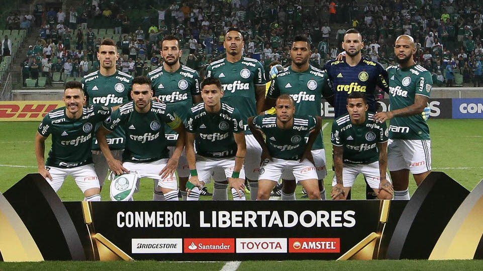
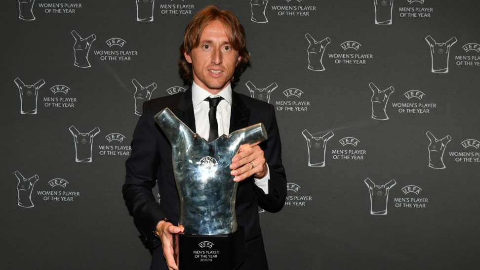
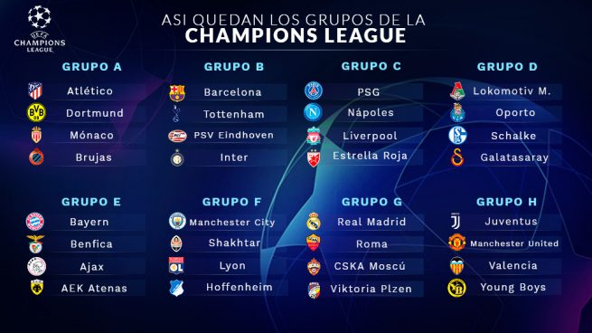

Palmeiras se destaca com a melhor campanha da primeira fase da Libertadores.

O Palmeiras termina a primeira fase da Libertadores invicto na competição e tem a melhor campanha da Libertadores. Melhor primeiro, com 16 pontos,
o Verdão tem cinco vitórias e um empate. Em seu grupo, tem o melhor ataque (14 gols feitos) e a melhor defesa (apenas três gols sofridos).
Além disso, o atacante Borja é o vice-artilheiro da competição com seis gols marcados. Está classificado!
Uefa divulga melhor jogador da Europa e realiza sorteio da Champions League.
Modric desbanca CR7 e leva o prêmio de melhor jogador da Europa na última temporada

Eleito melhor jogador da Copa do Mundo, Modric conquistou o voto de treinadores e jornalistas europeus
e consagrou-se como o melhor jogador do Velho Continente na última temporada. A Uefa anunciou os vencedores
de seus troféus individuais, referentes a 2017/18, - e o meia croata superou Cristiano Ronaldo e Salah no principal prêmio da entidade europeia.
Veja como ficaram os oito grupos da Champions League após sorteio da Uefa

A Uefa sorteou em Monaco, os oito grupos da Liga dos Campeões da Europa da temporada 2018/2019
Esta etapa da Liga dos Campeões começa no dia 18 de setembro. Os times se enfrentam em partidas de ida e volta dentro das suas chaves
e os dois primeiros se classificam para as oitavas de final, enquanto os terceiros colocados vão para o mata-mata da Liga Europa.
A grande final está marcada para 1º de junho de 2019, no Estádio Wanda Metropolitano, casa do Atlético de Madri.
Desenhos dos fãs
Um fã nos enviou um desenho
Bicicleta de Cristiano Ronaldo leva prêmio de gol mais bonito da temporada europeia.
Artilheiro e peça fundamental para o Real Madrid conquistar a última Liga dos Campeões, Cristiano Ronaldo segue
colhendo os frutos da bela campanha no torneio europeu. A Uefa anunciou nesta terça-feira que o luso conquistou
o prêmio de gol mais bonito da última temporada europeia com a bicicleta que impressionou o mundo no jogo de ida
das oitavas de final da Champions, diante da Juventus - seu atual clube.
CR7 desbancou o francês Payet, que ficou em segundo lugar com um golaço pelo Olympique de Marselha na Europa League,
e a espanhola Eva Navarro, que terminou em terceiro na votação com o lance na final da Eurocopa Sub-17 feminina.
Ele recebeu 56,9% dos mais de 346 mil votos dados pelos fãs no site da Uefa.
Veja abaixo o gol do craque português
Veja abaixo narradores mundo a fora narranndo o gol de Cristiano
Quem serão os melhores da Champions desta temporada ?
E aí quem você acha que serão os melhores jogadores da Champions League dessa temporada ?
quem será o artilheiro, lider de assistências, campeão?